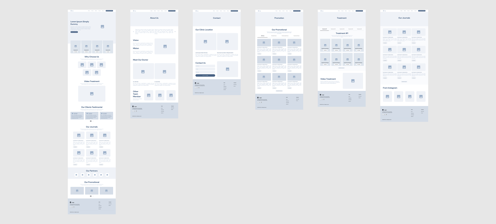
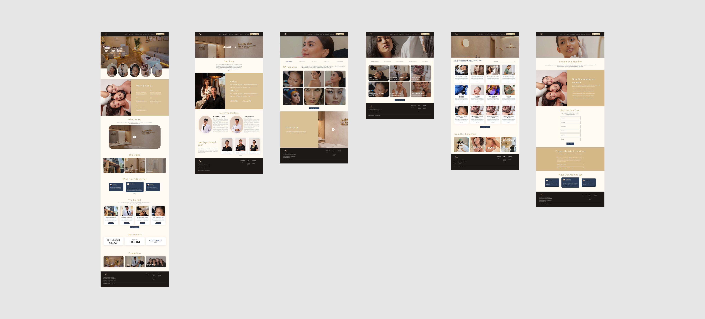
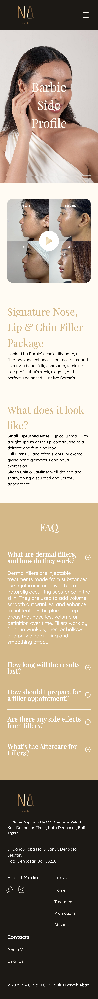

Design Layout Exploration
Explores layout structures and content arrangement to clarify user flow and prioritize key information before transitioning into visual design.


×

NA Clinic Bali is a redesign project focused on elevating the clinic’s digital experience into a more premium and conversion-oriented platform.
The previous website lacked clarity in structure, making it difficult for users to understand treatments and take action efficiently. This redesign addresses those gaps by restructuring content, strengthening visual hierarchy, and simplifying the booking journey.
The result is a more intuitive experience that guides users from exploration to decision-making, while reinforcing trust through a clean and refined interface.
Explores layout structures and content arrangement to clarify user flow and prioritize key information before transitioning into visual design.


Combines strong visual storytelling with structured content sections to guide users through treatments, promotions, and booking actions with clarity.

Reorganized into a vertical flow with focused content blocks, allowing users to explore treatments and take action quickly on mobile.



Users often feel uncertain when exploring aesthetic treatments, making clarity, reassurance, and structured information essential to build trust and support decision-making.
Led the end-to-end design process, including content structuring, visual design, and responsive layout across desktop and mobile.
This project showcases the ability to transform a service-based website into a clear, engaging, and conversion-focused experience by aligning user needs with business goals.